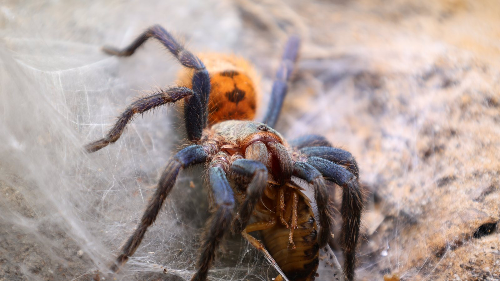
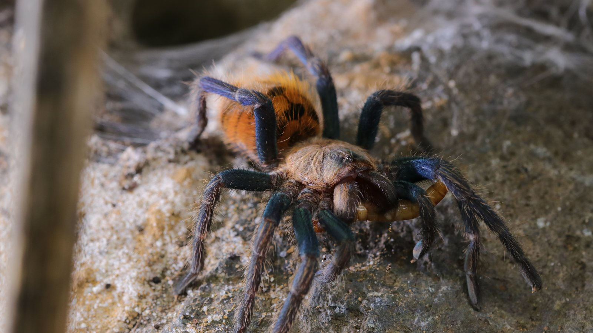

A terrestrial Venezuelan tarantula notable for laying extensive silk across the surface around its shelter. The species comes from a comparatively dry, exposed landscape.
Species profile · Current resident
Chromatopelma cyaneopubescens
Meet Ruby
Ruby is the Chromatopelma cyaneopubescens currently in my care. Her portrait brings together the species’ blue-green legs, warm carapace, and dense surface detail.

Scientific nameChromatopelma cyaneopubescens
FamilyTheraphosidae
Native rangeVenezuela
TaxonomyAccepted species
SexConfirmed female
In the wild
Natural history.
Blue-green legs, a warm carapace, and an orange abdomen create one of the collection's strongest colour combinations. Ruby's photographs also make the surface webbing easy to see.
Ruby's enclosure prioritises ventilation, a dry upper layer, a retreat, and water. Feeding responses shown in video are Ruby's own behaviour, not a promise about every individual.
Taxonomy and range
Chromatopelma cyaneopubescens is a Venezuelan endemic and the only accepted species in its genus. Recent work using verified observations has expanded the known distribution beyond the best-known Paraguaná records while emphasizing how much of the published biology still comes from captivity.
Burrows, shelter, and activity
Wild observations associate the species with dry, open scrub and silk shelters at the bases of vegetation, rocks, or shallow cavities. It spreads silk far beyond a single hole, producing a connected surface that combines cover, pathways, and vibration sensing.
Feeding ecology
Ruby hunts from that silk-rich working area. Passing arthropods can be detected before contact, followed by a rapid strike and retreat with the prey. Her feeding videos document a particularly bold individual response; they are not a species-wide feeding schedule.
Defence, senses, and movement
Bright blue-green legs and the warm orange abdomen are visual signals to us, not evidence that the spider is inviting contact. The animal can retreat rapidly and carries urticating abdominal hairs, so enclosure access should keep hands and faces away from both spider and loose substrate.
In my care
Meet Ruby.
Ruby is one of the most visually distinctive residents in the collection. Her feeding-response video and Codex history give the profile an individual story alongside the accepted taxonomy and range of Chromatopelma cyaneopubescens.



From Instagram
Posts & reels.
From the channel
Related viewing.
Introvertebrates on YouTube
Ruby’s best strikes since day one
A fast collection of Ruby’s feeding responses, presented as an Introvertebrates Short.
Personal observations
From the Codex.
Introvertebrates Codex
Ruby · keeper record
A privacy-safe summary of this resident’s time in care, feeding outcomes, molts, and measurements. These are observations from the Introvertebrates collection, not species-wide averages.
Awaiting a privacy-reviewed Codex export. No invented statistics are shown.
Never published here: raw notes, record IDs, seller or breeder details, enclosure identifiers, local file paths, or exact private event dates.
Continue exploring
Related profiles.


Read further
Sources.
- World Spider Catalog — Chromatopelma cyaneopubescensView the source.
- Anartia — distribution and habitat associations of Chromatopelma cyaneopubescensView the source.